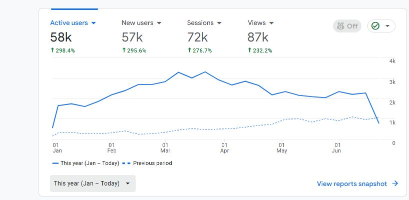
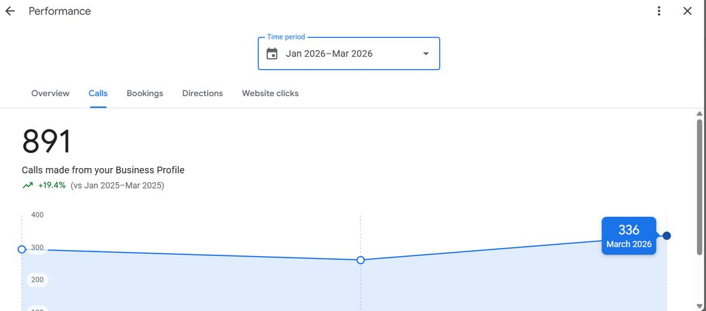
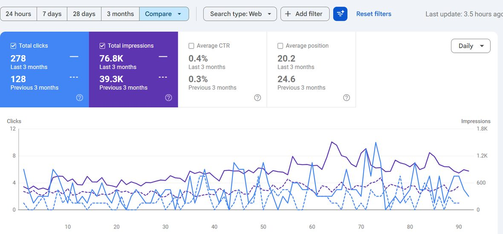
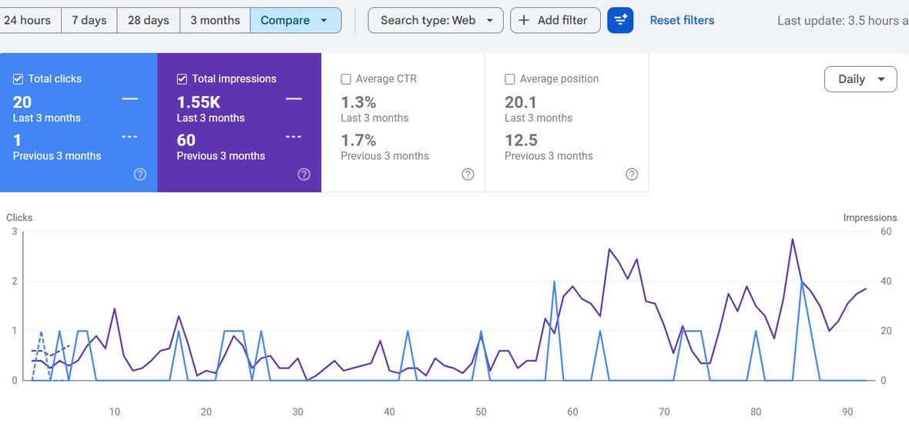
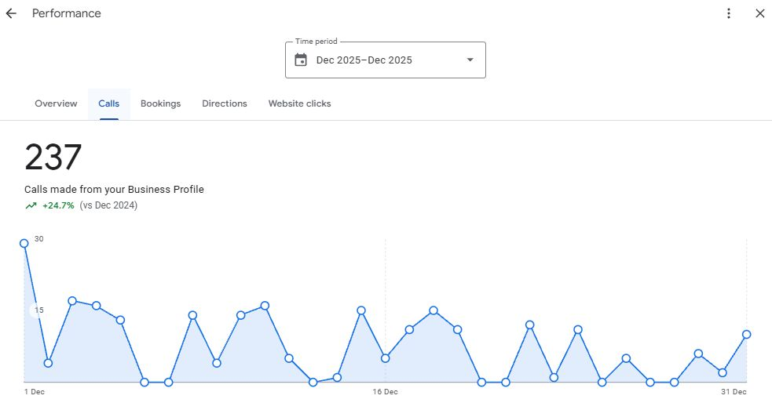
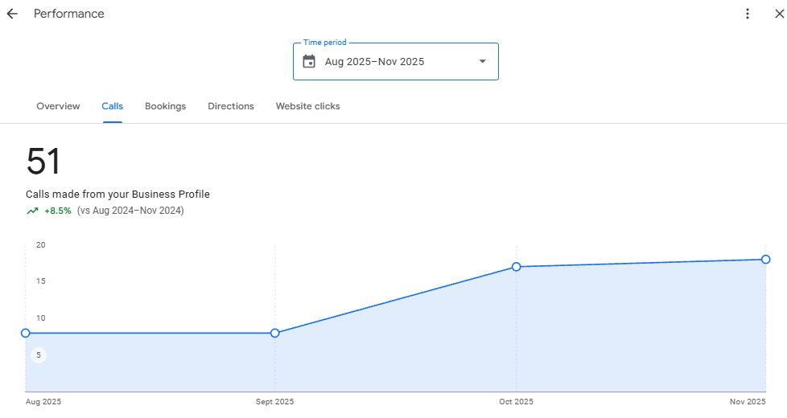
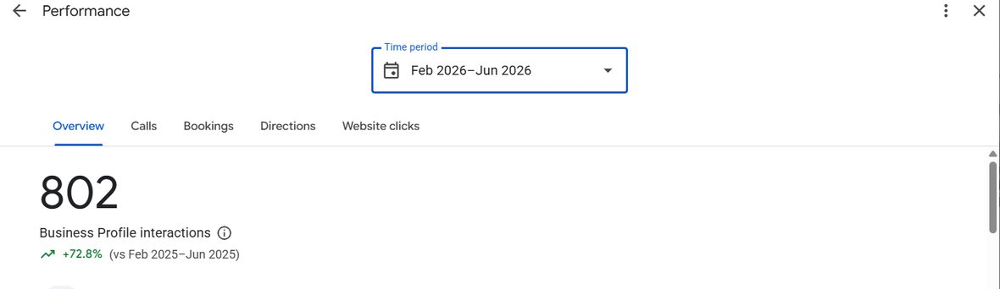

Case studies
See what I did for businesses like yours.
Every case below is a real engagement. Named clients are shown with their permission; software clients are described by category. The figures come straight from Search Console, Analytics, and Business Profile. Open any card to see the constraint, the intervention, and the outcome.
What kind of results has Muhammad Haseeb Sheikh delivered?
Documented results from prior engagements include growing a specialty clinic from 7,650 to 48,200 organic clicks over six months and lifting its average Google position from 19 to 6.5, documented in the healthcare SEO case study. The same constraint-first method has produced measurable organic growth across healthcare, SaaS, and local-service businesses. Every figure shown is from a real Search Console, Analytics or Business Profile dashboard, with account URLs cropped.
Healthcare SEO case studies
Recent work has clustered in healthcare. The same constraint method applies across SaaS, e-commerce, and professional services, and those cases are maturing.

Real patient demand existed, but the clinic was nearly invisible for high-intent searches and converted little of the traffic it had. Trust signals were thin at the moment of decision.
Rebuilt the intent-to-page architecture, fixed technical access, strengthened authority and reviews, and made calling or booking the obvious next step on every page.
Organic clicks grew from 7.65k to 48.2k and impressions from 1.42m to 9.17m, six months against the previous six, with average position moving from 19 to 6.5. The Business Profile logged 891 calls in January to March 2026, up 19.4% on the same quarter of 2025, and GA4 active users rose 298% on the previous period.
Sustained results depend on review velocity and the clinic's capacity to handle the demand it creates.



A family practice with almost no organic footprint. It surfaced for a handful of branded searches and was effectively absent for the conditions and services patients actually type.
Built out service and condition pages mapped to how patients describe symptoms rather than how clinicians name them, and cleared the indexation problems keeping most of the site out of results entirely.
Clicks went from 104 to 669 and impressions from 1.74k to 67.1k across three months against the previous three. The practice went from invisible to competing.
Average position fell from 19.4 to 27.5 and click-through rate from 6% to 1%. That is arithmetic, not decline: a site that ranked for a few dozen queries now ranks for thousands, and the new ones enter low and drag the average down. The averages should tighten as the stronger pages mature. This engagement is early, and I would rather show it mid-flight than wait for a prettier chart.

A membership-model practice with thin organic visibility, competing for attention against larger local providers.
Built condition and service pages mapped to local intent, with internal links concentrating authority on the pages that actually convert.
Clicks grew from 4.24k to 8.37k and impressions from 525k to 1.6m over six months, with average position improving from 14.6 to 8.6, moving the practice from mid page two onto page one. Most of the gain came in the first half of the window; the last two months flattened.
Local demand is finite. Growth here is about winning share of a defined market, not chasing raw volume.

Content existed, but it did not match how patients actually searched, so pages ranked for the wrong things and converted poorly.
Remapped existing pages to real intent and rebuilt internal structure before publishing anything new.
Clicks up 38% and impressions up 80% against the prior quarter, with average position improving from 14.8 to 11.9.
One quarter against the previous one. The position gain shows the direction; the work is not finished.

Near-invisible from a near-zero base, with weak foundations across technical, content, and authority at once.
Fixed technical access first, then built the initial set of intent-mapped pages. Foundations before volume.
Impressions grew from 14.8k to 56.1k, roughly fourfold, and clicks from 300 to 497 over six months, with average position improving from 33.1 to 28.3.
The earliest-stage healthcare case shown. CTR fell from 2% to 0.9% as impressions grew faster than clicks. The base is set; the growth phase is just beginning.

Commercial queries sat on page two and three - position 24.6 on average - so the product was invisible exactly where buyers were looking.
Same sequence as every engagement: technical baseline first, then pages remapped to what buyers actually search, then internal linking to concentrate authority.
Clicks grew from 128 to 278 and impressions from 39.3k to 76.8k in a three-month comparison, with average position improving from 24.6 to 20.2.
Small absolute numbers - this is a focused B2B niche, not a volume market. Shown for breadth across industries, not for scale.

Near-zero search footprint: 1.29k impressions across three months meant the market simply never saw the product.
Built the first intent-mapped page set and fixed indexation so the site could earn impressions at all - foundations before volume.
Impressions grew from 1.29k to 11.6k and clicks from 34 to 95 in a three-month comparison. Average position slipped from 5.2 to 11.1 and CTR from 2.6% to 0.8%, because the site began ranking for far more queries, most of them further down the page.
Multiples flatter when the base is shallow. The signal here is direction and slope, not the absolute count.

The site was effectively invisible: 60 impressions and a single click across three months.
The earliest work in the sequence: crawl access, indexation, and the first pages mapped to real queries.
Impressions grew from 60 to 1.55k and clicks from 1 to 20 in a three-month comparison. The earlier period holds only a few days of Search Console data, so this is effectively a site launch, not a turnaround. Average position moved from 12.5 to 20.1 as the site began appearing for more queries.
This is the first turn of the flywheel, nothing more. Included because a near-zero start is the hardest state to move, and it moved.
Ecommerce case studies are in progress
The constraint usually sits in crawl efficiency, intent-mapped category pages, and the conversion path. Results will appear here as engagements compound.
Ask for a relevant reference →Professional services case studies are mid-flight
Authority, local intent, and trust signals do most of the work here. Results will be published as they mature.
Ask for a relevant reference →When visibility compounds, the phone rings.
Search is the leading indicator; calls are the lagging one. Business Profile activity at three practices over the periods shown, with account URLs cropped:



Want this kind of read on your own site?
A short diagnostic returns a clear view of the one thing capping your organic growth, before any larger commitment.
Hiring for a role? I am open to senior and lead SEO positions, full-time or contract. Email me for a resume tailored to the role, or connect on LinkedIn.